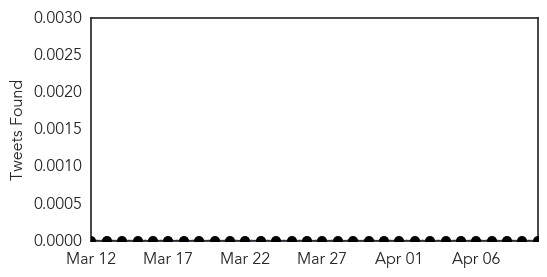
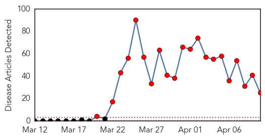
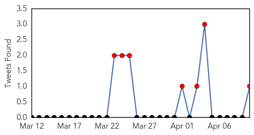
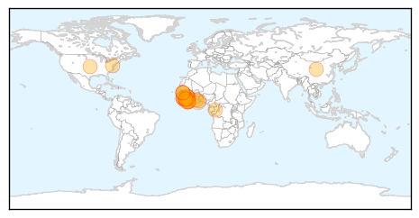
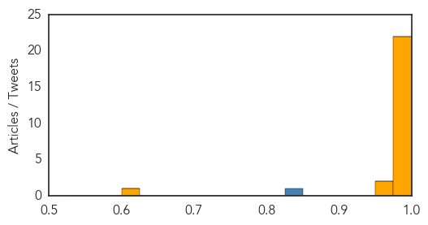

Bubonic Plague
30-Day Web Trend
1 alerts, 0 warnings

30-Day Twitter Trend
0 alerts, 0 warnings

Article Locations

Article Confidences

Top Articles:
-
No articles found for Apr 10, 2014
Top Tweets:
-
No tweets found for Apr 10, 2014
Ebola
30-Day Web Trend
21 alerts, 0 warnings

30-Day Twitter Trend
13 alerts, 0 warnings

Article Locations
Article Confidences
Top Articles:
- 1.000
- Ebola virus disease or EVD FAQs
- 1.000
- Ebola Virus Disease (EVD): The Key is Prevention
- 1.000
- Ebola Outbreak Has Killed More Than 100 in Liberia and Guinea
- 1.000
- Aid Organizations Take Emergency Measures In West Africa
- 1.000
- Ebola Outbreak in West Africa Most Challenging – WHO
- 1.000
- Ebola outbreak could last for months
- 1.000
- Ghana, Business Advice, Jobs, News, Business Directory, Real Estate, Finance, Forms, Auto
- 1.000
- Ebola spreading across Africa at ‘unprecedented’ rate
- 1.000
- Ebola Outbreak in U.S. Just a Plane Ride Away?
- 1.000
- Ebola Resurfaces in Africa
- 0.999
- Some Virus Patients in Western Africa Are Recovering
- 0.999
- Health workers in West Africa respond to Ebola outbreak
- 0.999
- Health workers in Guinea's capital to hunt for Ebola cases
- 0.999
- Guinea raises Ebola death toll to 95
- 0.999
- Charities unite to combat spread of Ebola virus
- 0.999
- Ebola virus disease, West Africa (Situation as of 10 April 2014) - Guinea
- 0.999
- Health workers in Guinea's capital to hunt for Ebola cases
- 0.998
- Health Ministry Takes Ebola Campaign to Schools
- 0.996
- Mali reports three suspected cases of Ebola
- 0.993
- Pharmacists cautioned against confusing Ebola symptoms with common sicknesses
- 0.990
- UNICEF-Liberia Ebola Outbreak: SitRep #14, 10 April 2014 - Liberia
- 0.988
- Over 100 killed by Ebola in Guinea
- 0.961
- Anthropologists Aid in the Ebola Epidemic
- 0.951
- Pharmacists urged to be on alert over Ebola disease
- 0.615
- Animal Transmitted Diseases Tackled
Top Tweets:
- 0.849
- RT: Deadly Ebola outbreak in Guinea continues. @WHO scales up response. @DrSanjayGupta & I decided to GoThere. We leave ton…